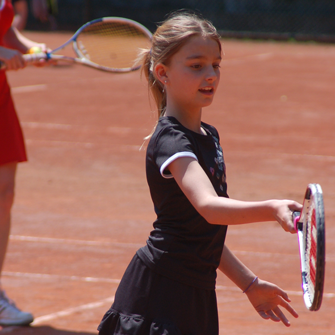
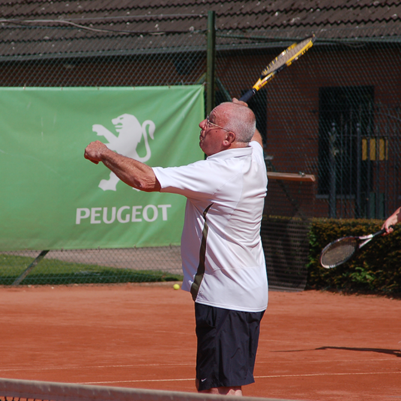

×

Historiek
Infrastructuur
Lidgeld
Lid worden
Attesten mutualiteiten
Hoe reserveren
Huishoudelijk reglement
Info inschrijvingen
Onze lesgevers
Start To Tennis
Jeugdlessen
Volwassenenlessen
Competitietraining
Tennisstages
Padelschool
Competities
Contact
Events
Sponsors
Galerij
☰


Contact
Wenst u nog meer informatie over onze club, dan kan u steeds bij volgende mensen terecht:
Informatie over de club in het algemeen:
Laat het niet na iemand van deze mensen te contacteren, wij helpen u met plezier verder!


Bestuur
| Naam | Functie | Terecht voor: | |
|---|---|---|---|
| Michel Willemsens | Voorzitter | Voorzitter@tcpeerdsbos.be | Bij Michel kan je terecht over:
|
| Annick Oyen | sectretaris | Info@tcpeerdsbos.be | Bij Annick kan je terecht voor:
|
| Christoph De Jaeger | Penningmeester | Penningmeester@tcpeerdsbos.be | Bij Christoph kan je terecht voor:
|
| Tim Hendrickx | Communicatie verantwoordelijke | communicatie@tcpeerdsbos.be | Tim is de contactpersoon om iets te publiceren:
|
| Paul Van Loock | Beheer Chalet | chalet@tcpeerdsbos.be | Bij Paul kan je terecht voor:
|
| Ronald Van Nyverseel | Jeugd verantwoordelijke | jeugd@tcpeerdsbos.be | Ronald volgt de jeugd op, bij hem kan je terecht voor:
|
| Peter Cavens | Sponsoring | sponsoring@tcpeerdsbos.be | Bij Peter kan je terecht voor:
|
| Bart Jorissen | Project ondersteuning | projecten@tcpeerdsbos.be | Bart staat ons bij in het uitwerken van projecten. |
| Michel Willemsens | Terreinverandwoordelijke | Terreinen@tcpeerdsbos.be | Bij Michel kan je terecht om:
|
| Annick Oyen | Mutualiteit verantwoordelijke | mutualiteiten@tcpeerdsbos.be | Bij Annick kan je terecht voor:
|